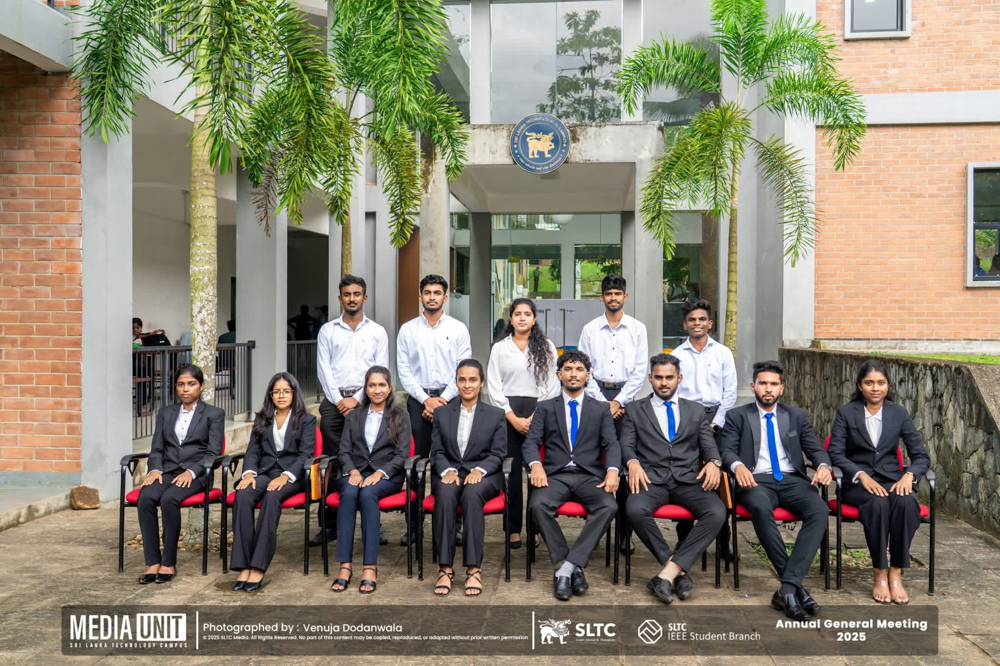
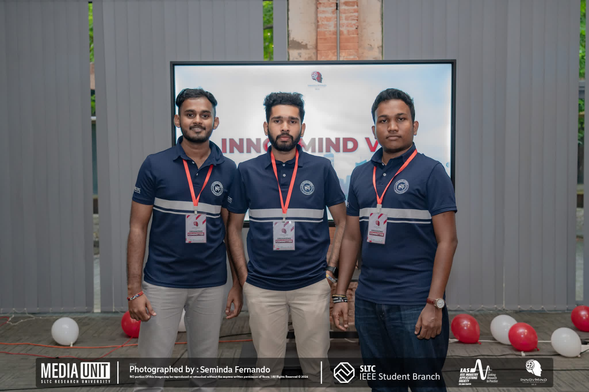

THAMINDU KAVINDA
A Data Science Undergraduate passionate about uncovering insights from complex data, building predictive models, and engineering intelligent solutions.

A Data Science Undergraduate passionate about uncovering insights from complex data, building predictive models, and engineering intelligent solutions.
I am a final-year B.Sc. (Hons) in Data Science undergraduate at SLTC, focused on transforming complex datasets into actionable business intelligence. My expertise lies in statistical modeling, predictive analytics, and machine learning architectures designed to solve real-world problems. By leveraging modern data visualization techniques, I bridge the gap between raw data and strategic decision-making to drive measurable value.
My core stack is built on Python, SQL, and Java, complemented by cross-platform application development using Flutter. I specialize in building scalable, production-ready solutions that integrate analytical backends with intuitive interfaces. Passionate about innovation and data engineering, I am eager to apply my skills to real-world challenges as a professional Data Scientist.
An intelligent personal finance assistant built with Flutter & Dart, powered by Supabase and a fine-tuned LLM (Gemma/Mistral) using QLoRA and RAG. It transforms financial statements into actionable insights while prioritizing user privacy.
🔒 Repository is currently private.
View Project →An autonomous AI Agent built to automate complex workflows, execute dynamic tasks, and provide intelligent problem-solving capabilities. It integrates modern LLMs with custom tools to streamline user queries and process data efficiently.
🔒 Repository is currently private.
View Project →Developed a machine learning model to classify and detect misleading news articles. Implemented natural language processing (NLP) techniques to analyze text patterns and improve prediction credibility.
🔓 Repository is Publicly Available.
View Project →Developed an end-to-end ETL data pipeline to extract, transform, and load e-commerce data for efficient processing and analytics using Python, PostgreSQL, and Apache Airflow.
🔓 Repository is Publicly Available.
View Project →Explore my verified digital credentials, technical certifications, and skill badges earned across industry platforms.
View Credly Badges →Check out my learning path transcripts, cloud certifications, and technical achievements on Microsoft Learn.
View Microsoft Profile →
Served as an Assistant Webmaster and Member of the IEEE Computer Society of SLTC, contributing to the management and maintenance of the society's official website. Collaborated with the Executive Committee to ensure a strong digital presence by supporting website updates, content publishing, and online engagement initiatives.
Actively participated in organizing technical events, workshops, and community-driven programs while contributing to project coordination, graphic design, and promotional activities. Worked closely with multidisciplinary teams to promote knowledge sharing, strengthen student engagement, and support the successful execution of IEEE initiatives and events.
I am proud to have served as an Advisory Panel Member for Codemania V6.0, the flagship datathon organized by the IEEE Computer Society Student Branch Chapter - SLTC. Being part of this initiative gave me the opportunity to support the successful execution of the event while contributing to an engaging and competitive learning experience for undergraduate participants.
This experience strengthened my leadership, collaboration, and event coordination skills while allowing me to work alongside a dedicated team committed to promoting innovation and data-driven problem-solving. I am grateful to the IEEE Computer Society Student Branch Chapter - SLTC for the opportunity to contribute to the success of Codemania V6.0 and be part of such an inspiring initiative.

I am proud to have contributed as a Design Team Member for InnovMind v2.0, organized by the IEEE IAS Student Branch Chapter - SLTC. My role focused on creating engaging visual designs that strengthened the event's identity and effectively communicated its vision across various platforms.
Working on this project enhanced my creativity, collaboration, and problem-solving skills while giving me valuable experience in delivering impactful designs within a dynamic team environment. I am grateful to the IEEE IAS Student Branch Chapter - SLTC for the opportunity to contribute to the success of InnovMind v2.0 and be part of such a dedicated team.
I’m proud to have contributed to the Sri Lanka Arduino Challenge as a Design Team Member. Being part of this project allowed me to collaborate with an amazing team, transform ideas into meaningful designs, and contribute to creating a successful outcome.
This experience strengthened my creativity, teamwork, and problem-solving skills while giving me valuable hands-on experience throughout the project. Grateful to everyone who supported and worked together to make this project a success.
I'm always open to discussing data opportunities, collaborative research projects, or internships.